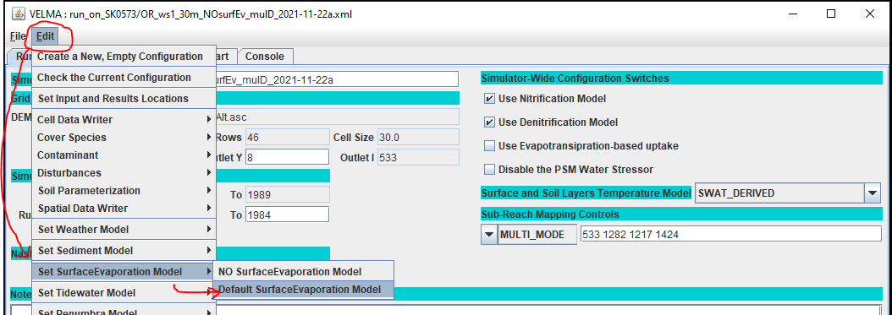
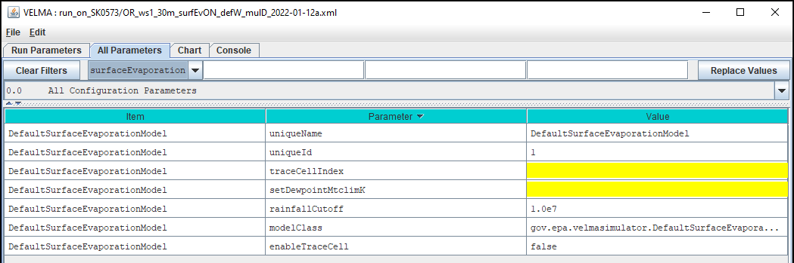
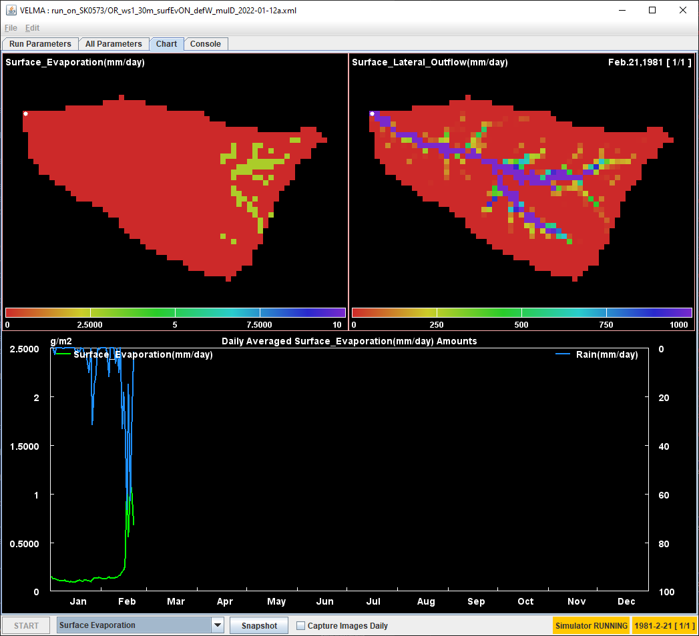

VELMA Surface Evaporation
Overview
VELMA version 2.2.0.0 supports the inclusion of Surface Evaporation as part of simulation configurations.
When Surface Evaporation is included in a simulation run, evaporation amounts are calculated during each simulation step at each cell, and the calculated amounts of evaporated water are removed from the cell (and the simulation state).
Water removed by surface evaporation is reported in Daily and Cell-specific .csv files of the simulation's results folder. Additionally, spatial-data writers may be configured to report evaporation amounts in .asc map files.
Important: Additional Driver Data Requirement
Calculating surface evaporation involves dew point, and VELMA's Surface Evaporation code uses minimum air temperature as an approximate value for dew point.
Therefore, any VELMA simulation configuration that includes Surface Evaporation must also include per-step minumum air temperature values as part of the driver data for its weather model.
Miniumum air temperature values are not required for VELMA simulation configuration without Surface Evaporation, but simulations configured with Surface Evaporation must provide miniumum air temperature driver data: without it, the simulation run will halt and fail during the first simulation step.
See the Dewpoint and Dewpoint Correction section of this document for how to provide minimum air temperature values to the simulation.
Adding Surface Evaporation to a VELMA Configuration
Begin by loading a VELMA simulation configuration into JVelma, or by creating a new configuration from within JVelma (via the Edit -> "Create a New, Empty Configuration" menu item).
Next, click the Edit -> "Set Surface Evaporation Model" to display the Surface Evaporation sub-menu. The Surface Evaporation sub-menu has two items: "NO Surface Evaporation Model" and "Default Surface Evaporation Model".

To add Surface Evaporation parameters to the current configuration, click the "Default Surface Evaporation Model" item.
Note: If the current configuration already contains Surface Evaporation parameters, clicking "Default Surface Evaporation Model" "resets" all existing Surface Evaporation parameters back to their default values.
When you click "Default Surface Evaporation Model", JVelma shifts display focus to the "All Parameters" tab, and filters the rows of the parameters table to those specific to Surface Evaporation.

The current set of Surface Evaporation parameters is relatively small, and several of them should be left as-is, set to the values provided as defaults.
Parameters That Can (Should!) be Left Alone
The modelClass parameter is set by JVelma when you add the contaminant to the simulation configuration. Do Not Change this parameter’s value. Ever.
The uniqueName parameter is automatically set to the rightmost name in the dot-separated sequence of the modelClass name and should be left as-is.
The uniqueId parameter is generated automatically and should be left as-is.
Parameters That Affect Surface Evaporation Behavior
The rainfallCutoff parameter specifies the amount of recent rainfall (in mm) at a given cell necessary to trigger
dew point correction prior to calculating the cell's surface evaporation.
When recentRainfall > rainfallCutoff --> perform dew point correction.
By default, this parameter's value is set to an "impossibly high" value, which effectively prohibits dew point correction. Be sure to change this parameter's value to something reasonable for your specific simulation configuration if you expect dew point correction to occur.
The setDewpointMtclimK parameter provides a K-coefficient calibration parameter for the MTCLIM equation used to compute dew point correction.
The value of this parameter can be either a floating point number or the name of an .asc grid map file of cell-specific values.
| parameter type | example | behavior |
|---|---|---|
| single value | 1.65 |
Specified value is used as the dew point MTCLIM K-coefficient at all delineated cells |
| map file name | ./m_1_DEM/dewpointK_values.asc |
Values in the specified file are used as cell-specific MTCLIM K-coefficient values. |
When setDewpointMtclimK is set to an .asc grid map file, the file may be specified by its name alone, its name and a partial path, or its name and a fully-qualified path.
When a fully-qualified path is not specified, VELMA assumes the name or partial path + name is relative to the root input data directory specified by the configuration parameters inputDataLocationRootName and inputDataLocationDirName.
An .asc grid map file used to provide data for the dew point K-coefficient calibration parameter must duplicate all of the DEM grid .asc file's header (ncols, nrows, etc.) values.
It should also not contain nodata_value values, because the Surface Evporation code does screen out or replace nodata_values in the .asc file.
Any nodata_value value coinciding with a cell included in the simulation's delineated watershed will have the nodata_value value assigned as its MTMLIM K-coefficient.
This is unlikely to be what was intended, and is difficult to detect if it occurs.
Parameters That Provide Additional Reporting Data
The enableTraceCell and traceCellIndex pair of parameters determine whether or not VELMA collects and reports
extra Surface Evaporation calculation details
and the cell location those details are reported for.
When enableTraceCell is set true, VELMA writes a log message containing Surface Evaporation details for the cell location specified by traceCellIndex to the global trace log .csv file specified by the VELMA csvTraceLogFileName parameter (default name "GlobalTraceLog.csv").
The traceCellIndex parameter's value can either be left unspecified, or be the linear cell index value of a cell within the watershed delineated for the simulation configuration.
When it is left unspecified, VELMA will default to reporting details at the simulation configuration's specified outlet cell.
enableTraceCell |
traceCellIndex |
Outcome |
|---|---|---|
true |
blank | outlet cell's surface ev. details logged to csvTraceLogFileName file. |
true |
cell index | specified cell's surface ev. details logged to csvTraceLogFileName file. |
false |
blank | no tracing written to trace .csv file. |
false |
cell index | no tracing written to trace .csv file. |
The details reported can assist in understanding surface evaporation behavior during calibration, but reporting them costs a bit of additional running, and increases the size of the global trace log .csv file.
For this reason, enableTraceCell is set false by default, and VELMA only reports details for a single cell location.
Removing Surface Evaporation from a VELMA Configuration
Clicking Edit -> "Set Surface Evaporation Model" -> "NO Surface Evaporation Model" removes any existing Surface Evaporation parameterization from the current configuration. When the current configuration has no existing Surface Evaporation parameters, clicking "NO Surface Evaporation Model" does nothing.
An Overview of Surface Evaporation's Behavior and Effect
How are Surface Evaporation Amounts Calculated?
Surface Evaporation amounts are computed based on the technique described by Edward T. Linacre in his 1994 paper:
Linacre, Edward T. “Estimating U.S. Class A Pan Evaporation from Few Climate Data.” Water International, vol. 19, no. 1, 1994, pp. 5–14.
Based on that paper, this is the equation VELMA uses:
ev = (0.015 + 0.00042 * temperature + 0.000001 * elevation) * (0.8 * irradiance - 40 + 2.5 * airDensityByElev * windSpeed * (temperature - dewPoint))
The components of the formula are:
| Component | Description | Cell-Specific? |
|---|---|---|
| 0.015 | [ * ] |
no |
| 0.00042 | [ * ] |
no |
| temperature | average daily air temperature, degrees C | configuration-dependent |
| 0.8 | [ * ] |
no |
| irradiance | solar irradiance in W/m^2 | configuration-dependent |
| 40 | [ * ] |
no |
| 2.5 | [ * ] |
no |
| airDensityByElev | change in air density with elevation | yes |
| windSpeed | wind speed in m/sec at 2 meters above ground | no |
| dewPoint | deg C | configuration-dependent |
Note: Each
[ * ]indicates a constant value for a term of the equation, as utilized by Linacre in the 1994 paper.
These values were derived by Linacre for his 1994 paper, based on his earlier 1993 paper:
Linacre, Edward T. “Data-Sparse Estimation of Lake Evaporation, Using a Simplified Penman Equation.” Agricultural and Forest Meteorology, vol. 64, no. 3, 1993, pp. 237–56.
Note: "configuration-dependent" indicates the component may or may not be cell-specific, depending upon the VELMA simulation configuration and driver data in use.
Note: Currently, VELMA hardwires windSpeed to the value 0.001.
How Does Surface Evaporation Affect Simulation State?
When the simulator calculates a Surface Evaporation amount greater than zero for a cell location, the cell's current SURFACE_LATERAL_OUTFLOW water amount is reduced by the calculated evaporation amount. When the calulated evaporation amount exceeds the cell's current SURFACE_LATERAL_OUTFLOW amount, the SURFACE_LATERAL_OUTFLOW is zeroed. SURFACE_LATERAL_OUTFLOW is the amount of water that VELMA's Water Balance mechanism has determined a cell will transfer to its downhill neighbors during the current simulation step. Therefore, Surface Evaporation has the overall effect of (slightly) reducing the water amounts moving across the watershed surface during a simulation run. Because surface water may penetrate (inflow) into a cell's soil layers, Surface Evaporation can indirectly affect the water balance of a cell's soil layers (by reducing the amount of surface water available for inflow).
Surface Evaporation is a separate computation from VELMA's PET/ET calculation. Unlike Surface Evaporation, PET/ET is calculated against the water amounts in the four soil layers, may include leaf biomass as a calculation factor, and is itself a factor of VELMA's water balance difference equations.
When Does Surface Evaporation Occur?
Surface Evaporation amounts are computed individually for each cell, during each simulation step. Within the sequence of events that constitute a simulation step, Surface Evaporation is calculated after a cell's water balance is determined, but before transport of chemicals by lateral or vertical water movement is calculated. Surface Evaporation also occurs before water movement through drain pipes (if the simulation is configured with Water Drains).
Dew Point and Dew Point Correction
Dew point is one of factors required for caculating surface evaporation values, and VELMA's Surface Evaporation code uses minimum air temperature as an approximate value for dew point. Therefore, as previously stated, VELMA simulations configured for Surface Evaporation *must * include per-step minimum air temperature driver data, or the simulation will and fail during the first simulation step.
See the MinMaxAirT Weather Drivers Overview document for a summary of VELMA weather model min/max air temperature support and how to provide driver data.
When a simulation configuration additionally provides maximum air temperature driver data values for its weather model and a value or map for its
setDewpointMtclimK
parameter, VELMA's Surface Evaporation code can attempt to improve ("correct") dew point values by setting them equal to the result of a MTCLIM model calculation.
However: keep in mind that even when all the necessary configuration/driver data is specified, dew point correction still occurs only when recent rainfall is greater than value of the
rainfallCutoff
parameter.
I.e.
When (Has max airT driver data) AND (Has setDewpointMtclimK value) AND (recentRainfall > rainfallCutoff) --> dew point correction is computed.
Simulation Results for Surface Evaporation
Basic Evaporation Results
When a VELMA simulation configuration includes Surface Evaporation, VELMA's DailyResults.csv and AnnualResults.csv files, along with any specified Cell-writer .csv files, include columns reporting per-step surface evaporation amounts.
In DailyResults.csv and AnnualResults.csv, the current column name for Surface Evaporation values is:
Surface_Evaporation(mm/day)_Delineated_Average
In Cell-writer .csv files, the current column name for Surface Evaporation values is:
Surface_Evaporation(mm/day)
Surface Evaporation-specific data columns are not included in VELMA results files when Surface Evaporation is not part of the simulation configuration.
Optional, Detailed Reporting for Configuration Calibration
When the Surface Evaporation enableTraceCell
parameter is set true, VELMA writes a location-specific log message containing evaporation calculation details for each simulation step to the csvTraceLogFileName (default name "GlobalTraceLog.csv") .csv results file. The log messages report details of the surface evaporation calculation at every simulation step, but only for a single cell location, specified by the
traceCellIndex parameter.
A header log message for the trace data is also written; it looks like this:
FINEST,doSurfaceEvaporationAtCell,Loop,Step,Year,Jday,iCell,elevation,airDensityByElev,aveTemperature,minTemperature,maxTemperature,irradiance,recentRainfall,todayRain,rainfallCutoff,dewpointMtclimK,mtclimVal,dewPoint,T1_surfaceLateralOutFlow,evapo,actualEvapo,diff(evapo - actualEvapo),T2_surfaceEvaporation,T2_surfaceLateralOutFlow
| Column Header | Description |
|---|---|
| FINEST | The logging level of the data. |
| doSurfaceEvaporationAtCell | The VELMA code that created the data. |
| Loop | The simulation loop when this row of data was written. |
| Step | The simulation step (zero-based) when this row of data was written. |
| Year | The simulation year when this row of data was written. |
| Jday | The Julian day of the year when this row of data was written. |
| iCell | The location (linear cell index) that this data is for. |
| elevation | The elevation (in meters) of iCell. |
| airDensityByElev | The air density used in the evaporation calculation. |
| aveTemperature | iCell's average air temperature (in degrees C) |
| minTemperature | iCell's minimun air temperature (in degrees C) |
| maxTemperature | iCell's maximum air temperature (in degrees C). A value of NaN indicates maximum air temperature driver data was unavailable. |
| irradiance | iCell's irradiance (in Watts/m^2) |
| recentRainfall | The amount (in mm) of recent rainfall. (Currently, "recent" means rainfall on the previous day). |
| todayRain | The amount (in mm) of rainfall for the current simulation Step, at this iCell. |
| rainfallCutoff | The value specified for the rainfallCutoff parameter. |
| dewpointMtclimK | The value specified for the setDewPointMtclimK parameter either directly or via .asc map file at this iCell. A value of NaN indicates the parameter was left blank. |
| mtclimVal | The MTCLIM value calculated as the corrected dew point value for this cell. A value of NaN may indicate no mctlimVal was computed, or that a specific value computed to NaN. |
| dewPoint | The dew point value used in the evaporation calculation. |
| T1_surfaceLateralOutFlow | The amount of water (in mm) available in the surface lateral outflow pool for this cell, at this simulation step, before evaporation takes place. |
| evapo | The amount of water calculated as evaporated for iCell at the current simulation Step. |
| actualEvapo | The amount of water actually evaporated (removed from the surface lateral outflow pool) at iCell for this simulation Step. |
| diff(evapo - actualEvapo) | The difference between the two prior values, calculated as shown in the header text. |
| T2_surfaceEvaporation | The amount of water (in mm) calculated as evaporated -- should match the "actualEvapo" value. |
| T2_surfaceLateralOutFlow | The amount of water (in mm) remaining in the surface lateral outflow pool after it is reduced by the calculated evaporation amount. |
Configuring Spatial Data Writers for Surface Evaporation
VELMA simulations configured with Surface Evaporation can report spatially-explicit evaporation amounts as part of simulation run results by configuring a Spatial Data Writer to capture SURFACE_EVAPORATION.
Here is an example spatial data parameterization:
/spatialDataWriter/SurfaceEv/allowNonWatershedCellValues, false
/spatialDataWriter/SurfaceEv/initializeActiveInterval,
/spatialDataWriter/SurfaceEv/initializeActiveJdays, 1
/spatialDataWriter/SurfaceEv/initializeActiveLoops, 1
/spatialDataWriter/SurfaceEv/initializeActiveYears, 1980
/spatialDataWriter/SurfaceEv/initializeResultsLocation, ./SpatialResults
/spatialDataWriter/SurfaceEv/initializeSpatialDataSources, SURFACE_EVAPORATION
/spatialDataWriter/SurfaceEv/modelClass, SpatialDataWriter
/spatialDataWriter/SurfaceEv/trimOutputToWatershedBoundary, false
Other simulation configurations could select different timing or trimming values.
Only the initializeSpatialDataSources parameter's value is invariant: it must be set to SURFACE_EVAPORATION for the Spatial Data Writer to successfully report surface evaporation data values.
The Surface Evaporation Runtime Display
When VELMA simulation configurations include Surface Evaporation, the JVelma GUI's "Chart" provides a basic runtime display option.
After starting a simulation run in JVelma, in the "Chart" tab, click the drop-down display selector to list the available chart types, and click-select "Surface Evaporation".
(Note: "Surface Evaporation" only appears in the drop-down if the running simulation configuration includes Surface Evaporation.)
The Surface Evaporation display provides spatially-explicit views of current surface evaporation values and surface later outflow amounts, as well as daily average temporal charting for the same.

The display panel color-range min/max values are specified by the following configuration parameters:
| Parameter Name | Defines? |
|---|---|
| minSurfaceEvaporationSpatialDisplay | min value for upper-left Surface Evaporation spatial panel. |
| maxSurfaceEvaporationSpatialDisplay | max value for upper-left Surface Evaporation spatial panel. |
| minSurfaceLateralOutflowSpatialDisplay | min value for upper-right Surface Lateral Outflow spatial panel. |
| maxSurfaceLateralOutflowSpatialDisplay | max value for upper-right Surface Lateral Outflow spatial panel. |
| minSurfaceEvaporationDayDisplay | min value for the left-side scale of the bottom Daily Averaged temporal panel. |
| maxSurfaceEvaporationDayDisplay | max value for the left-side scale of the bottom Daily Averaged temporal panel. |
| maxRainDayDisplay | max value for the right-side scale of the bottom Daily Averaged temporal panel. |
Note: there is no
minRainDayDisplayparameter. Minimum rain is hardwired to "0.0".
Adjust these values to provide suitable color ramping for your simulation's range of evaporation and surface lateral outflow amount values.